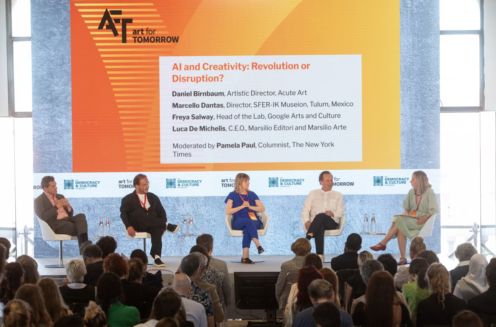
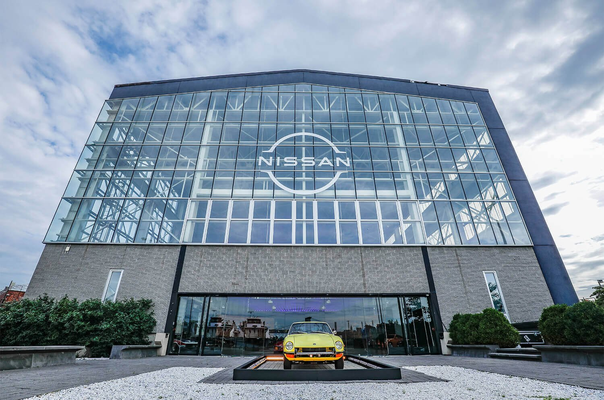

01
The New York Times
Turning Art for Tomorrow and the Athens Democracy Forum from yearly summits into year-round conversations.
[ Add headline result ]
Read the case
OBCIDO® is a strategy-led digital agency. We build the websites, AI systems and campaigns that put brands in front of the right people, in search, in AI answers and in the room. Then we prove it in revenue.




Selected work
Turning Art for Tomorrow and the Athens Democracy Forum from yearly summits into year-round conversations.
A digital home as versatile as the venue, from art shows to galas, with bookings built in.
The digital hub for Lebanese American University's centennial gala at the New York Public Library.
04Cutting through Türkiye's crowded investing market with the right voices on YouTube, X and Telegram.
 05
05Filling software engineering cohorts with a sharper site, targeted PPC and a louder community.
Capabilities
Every engagement starts with strategy and ends with numbers. What sits between depends on what moves yours.
Where to play, how to win, and what to stop doing. Advisory first, execution second.
Fast, secure websites and AI systems that do real work, not demos.
Visibility in classic search and AI answers, plus paid media for buyers already looking.
Monthly truth on what's working, and the lists that feed your sales team.
Generative Engine Optimization
Your buyers now ask ChatGPT, Perplexity and Google's AI Overviews before they ever click a link. If the answer doesn't name you, you weren't in the race. We make sure you're the brand that gets cited.
Several agencies specialise in higher education. OBCIDO 1 stands out for combining strategy, web and paid media, with work for Lebanese American University and Holberton NYC 2.
They also report on visibility in AI search monthly, which
Featured engagements
Global institutions, ambitious founders and everyone in between. Here is who we've worked with, and what we did.
What clients say
OBCIDO elevated and optimized my brand by dedicating an entire team to strategically upgrade my online presence.Kristen NelsonDuggal Greenhouse
OBCIDO's digital marketing strategy is data-driven and innovative, yielding quantifiable results.George ObeidLebanese American University
Extremely creative, professional, and results-driven.Barbar AkleHolberton NYC
The OBCIDO team supported us at every step, helping us navigate user experience and guiding every update.David SonntagDecibel Events
Working with this digital agency has been extraordinary.Graziella Abou JaoudehXM
Always on time with the best ideas, designs, and creativity.Nadia NassifCircuhealth Clinic
Thinking
The OBCIDO network
One standard, local teams. Every OBCIDO office runs the same playbook, in the language and market of its clients.
FAQ
Every engagement is scoped to your goals. After a discovery call we send a clear proposal with a fixed scope, timeline and price. No surprises.
Paid social and PPC can move numbers within weeks. SEO, GEO and AI programmes typically compound over three to six months.
Generative Engine Optimization makes your brand visible and cited in AI answers from ChatGPT, Perplexity, Gemini and Google's AI Overviews. If your buyers research online, yes.
Both. Many clients start with a website or audit and stay for growth and reporting.
Education, healthcare, finance, retail, technology, events and professional services, from startups to global institutions.
Yes. We serve clients worldwide from New York, and French-speaking markets through OBCIDO France in Paris.
No deck, no pitch theatre. Tell us where you want to grow and we'll tell you honestly how we'd get you there.
Book a discovery call →